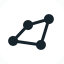
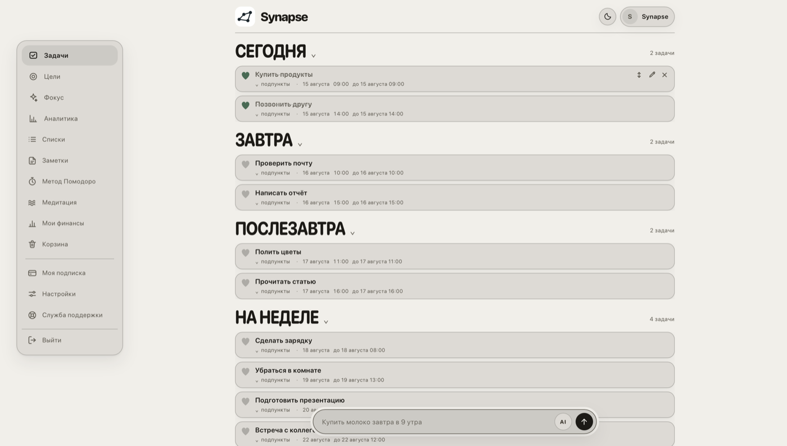
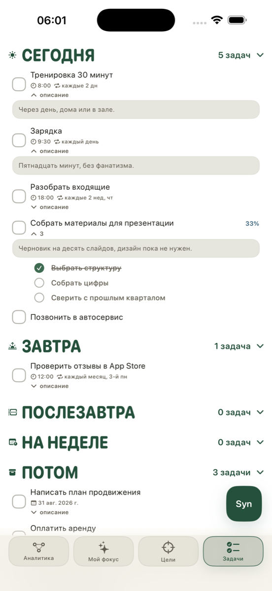
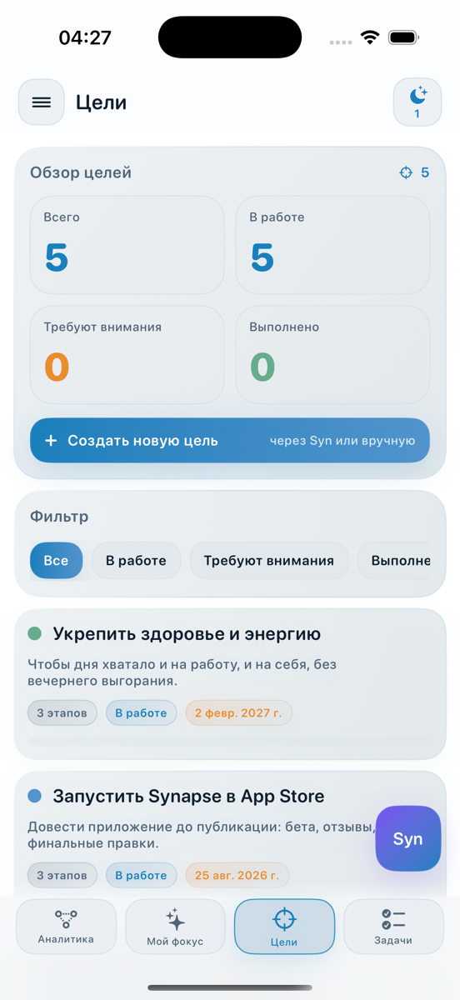
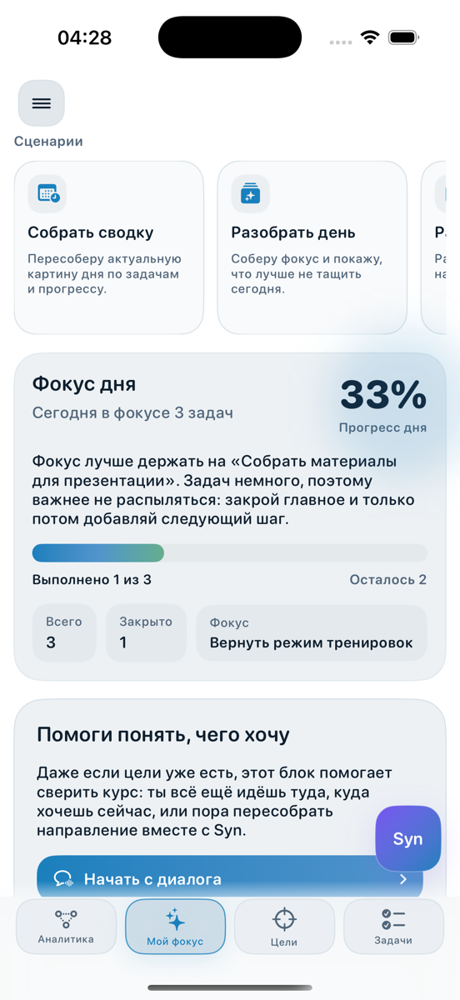
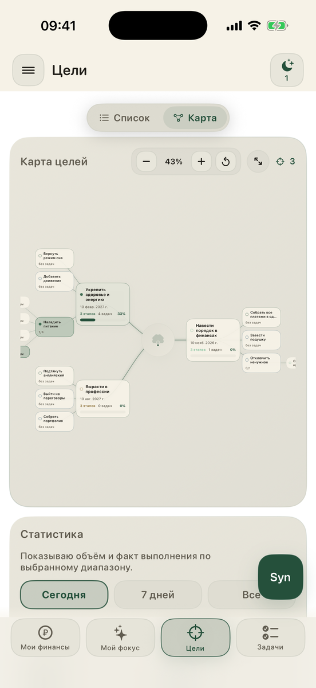
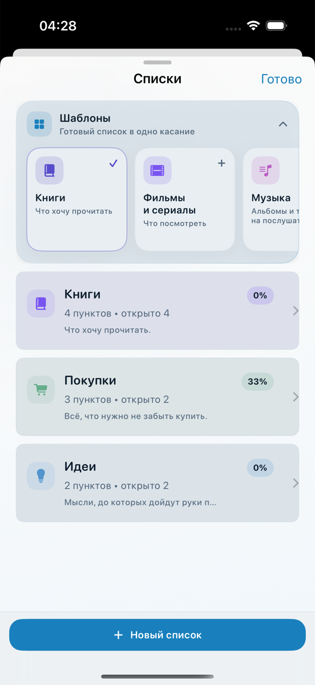

01
Цель, а не только задачи
У цели есть этапы, у этапов — свои задачи. Прогресс считается сам, и сразу видно, какое дело сегодня реально двигает большое.

Synapse Открыть Synapse TelegramБольшая цель разбирается на этапы, этапы — на задачи, которые можно сделать сегодня. Один шаг за раз, но в ту сторону.
Открывается в браузере сразу, без регистрации и установки. Ассистент Syn отвечает текстом и голосом — шесть обращений в сутки бесплатно.

Сегодня2 задачи
Завтра1 задача
На неделепусто

Записи хранятся в вашем браузере и никуда не отправляются. Ассистент Syn отвечает текстом и голосом. Помодоро и медитация — бесплатно.
Смысл, ради которого всё это
Создавай
причины
Результат никогда не в наших руках целиком. В наших руках — усилие. Ты создаёшь причины: делаешь шаг, потом ещё один, и ещё. Synapse нужен для того, чтобы эти шаги не терялись и складывались в путь.
Отличия
У цели есть этапы, у этапов — свои задачи. Прогресс считается сам, и сразу видно, какое дело сегодня реально двигает большое.
Скажи словами: «перенеси созвон на пятницу», «разбери мой день», «сделай из этого цель». Syn меняет план сам и показывает, что именно сделал.
Все цели, этапы и связанные задачи на одном полотне. Видно, где есть движение, а где месяц ничего не происходило.
Как это выглядит




Возможности
Сегодня, Завтра, Послезавтра, На неделе и Потом. Всё видно сразу, без переключений.
Мягкая дата, жёсткий срок «до 18:00» или окно «с 10:00 до 11:30» — задача сама знает, когда её можно закрыть.
Каждый день, по будням, раз в неделю или раз в месяц; в приложении — ещё по числам месяца. Пропустил — Synapse честно это покажет, а не притворится.
Продиктуй задачу, заметку или целый разбор дня. Знаки препинания расставятся сами.
Папки с заметками и списки покупок рядом с планом, а не в отдельном приложении.
Таймер фокуса и звуки для передышки — дождь, лес, костёр. Работают офлайн.
Сколько наметил, сколько закрыл, что просрочено. По дню, неделе или за всё время.
Палитры на выбор, светлая и тёмная тема, размер шрифта и плотность списка — под себя.
Данные
В веб-версии они лежат в памяти самого браузера, в приложении — на устройстве. К нам на сервер они не уходят: мы их не видим и не храним.
В веб-версии «Настройки → Данные» сохраняет всё в один файл. Им же записи переезжают в другой браузер.
Автоматической синхронизации между ними нет, и мы не делаем вид, что она есть. Каждая площадка ведёт свои записи.
Если iCloud включён, вторая копия лежит в личном хранилище Apple: оно ваше, доступа к нему у нас нет. Выключен — записи остаются только на устройстве, и приложение говорит об этом прямо.
Счётчик обращений к Syn за сутки, факт оплаченной подписки и память ассистента — она пока работает только в приложении. Память можно очистить в настройках.
Ни в браузере, ни в приложении: никаких рекламных SDK и рекламного идентификатора. Мы не следим за вами и не продаём данные. На страницах сайта работает Яндекс.Метрика — обезличенная статистика, чтобы видеть, где написано непонятно; в самом сервисе её нет.
Подробности — в политике конфиденциальности.
Тарифы
Бесплатно
0 ₽
навсегда, без карты и регистрации
Pro на неделю
149 ₽/нед
попробовать, не платя за месяц
Pro на месяц
590 ₽/мес
списывается раз в месяц
Pro на год
4 990 ₽/год
это 416 ₽ в месяц — на 2 090 ₽ дешевле
Отмена в один клик. Доступ — до конца оплаченного периода.
Веб-версия открывается сразу, без регистрации и без карты. Первые шаги подскажут, с чего начать.